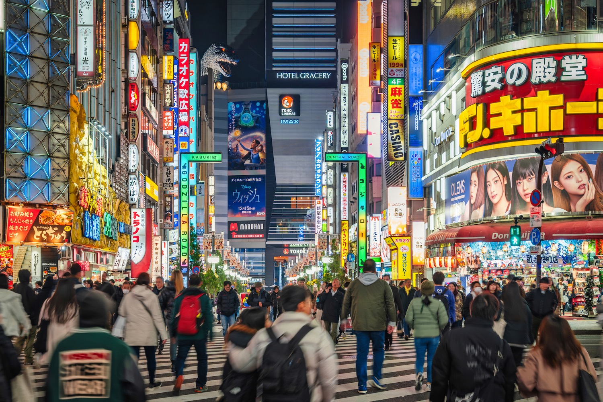
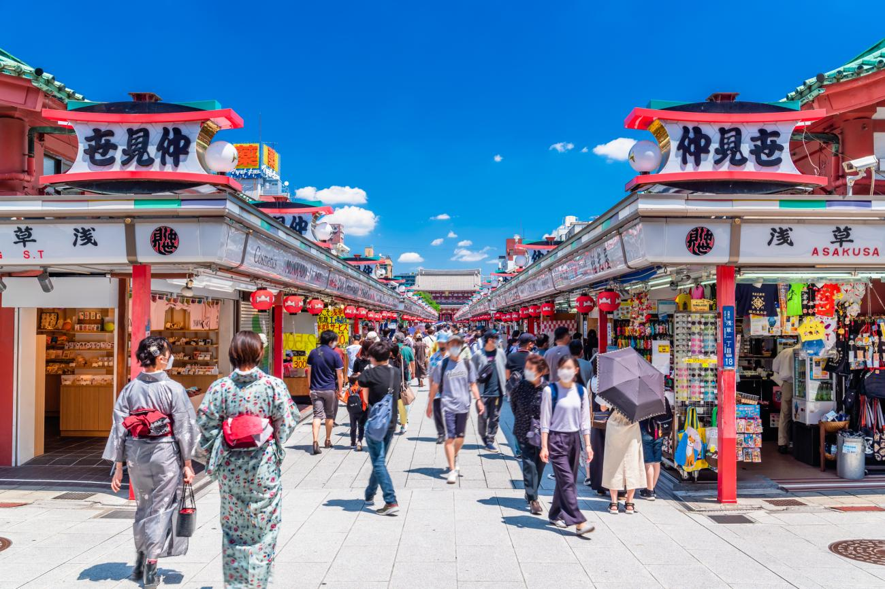

Explore Tokyo's renowned culinary districts, each offering a unique flavor of the city's rich food culture.

Tsukiji Market
Tsukiji Market has long been a symbol of Tokyo’s culinary heritage, renowned worldwide as a hub of fresh seafood and vibrant activity. Although the inner wholesale market relocated to Toyosu in 2018, the outer market remains a bustling destination, offering visitors a taste of its rich history and unmatched variety of food.
Wander through narrow alleys lined with stalls brimming with fresh fish, succulent shellfish, and expertly prepared sushi. Beyond seafood, Tsukiji also showcases premium produce, aromatic teas, and an array of Japanese delicacies, from tamagoyaki to wagyu beef skewers.
This market is more than a place to shop; it’s an experience that reflects the heartbeat of Tokyo’s food culture. A visit to Tsukiji promises not just a feast for the palate, but a deeper connection to the traditions and vibrancy of Japan’s culinary world.

Shinjuku
Shinjuku, known for its dazzling neon lights and bustling streets, is also a gastronomic paradise offering an eclectic mix of flavors. This vibrant district is home to everything from high-end dining experiences in luxury skyscrapers to cozy alleyway eateries and lively izakayas.
Step into Omoide Yokocho ("Memory Lane") to savor authentic yakitori and nostalgic charm, or explore the subterranean labyrinth of Golden Gai, where tiny bars and bistros offer unique atmospheres and delicious drinks. For those seeking variety, the department stores of Shinjuku boast extravagant food halls filled with beautifully crafted sweets, fresh sushi, and gourmet snacks.
Whether it’s a bowl of rich, steaming ramen at a late-night joint or a refined kaiseki meal with panoramic city views, Shinjuku encapsulates Tokyo’s culinary diversity and energy, making it a must-visit destination for food lovers.

Asakusa
Asakusa, with its timeless charm and historic streets, offers a glimpse into Tokyo's rich culinary heritage. Centered around the iconic Senso-ji Temple, this district blends traditional flavors with a lively atmosphere, making it a favorite destination for food enthusiasts.
Nakamise Street, the bustling shopping avenue leading to the temple, is a treasure trove of snacks and street food. Indulge in freshly made ningyo-yaki (small, sweet cakes filled with red bean paste), crisp senbei rice crackers, and other Japanese delicacies steeped in history.
For a deeper dive into Asakusa’s food culture, try classic tempura at one of the area’s long-established restaurants or savor a traditional sukiyaki meal in a historic setting. Don’t miss the chance to enjoy refreshing Asahi beer while gazing at the iconic Tokyo Skytree from the nearby riverside.
Asakusa captures the essence of Edo-era Tokyo with its timeless flavors and warm hospitality, offering a culinary journey as rich as its cultural roots.